Expert-Space Exploration in MoE Reinforcement Learning
中文题名： MoE强化学习中的专家空间探索
作者： Hongyi He、Zhenghao Lin、Xiao Liu、Peng Cheng、Yan Lu、Yeyun Gong
机构： 清华大学；合作机构为微软研究院，第一作者工作完成于微软实习期间。
公开日期： 2026年9月11日，arXiv v1；阅读日期2026年9月15日。
论文： arXiv:2609.13058
代码： ESRL-Release，作者官方链接已核验可访问；本笔记没有执行完整训练复现。
1. 背景和问题
标准MoE采样依赖确定性的Top-K路由，使同一前缀反复激活相同专家，其他专家计算路径没有被显式探索。这句话对应论文引言提出的问题。大模型强化学习通常把探索等同于输出端的随机采样：同一道题生成多条推理链，比较奖励，再提高正确回答的概率。可是对稀疏专家模型而言，词表分布本身是特定专家子网络计算出来的。如果模型始终先经过同一组专家，再在这一组专家给出的分布上调温度，探索就只发生在既有计算结果的选择阶段；模型内部可能存在的其他计算路径还没有获得直接尝试的机会。
这并不意味着词级采样完全不能改变专家路由。采到不同词以后，后续前缀和隐藏状态都会改变，后续位置自然可能激活不同专家。作者强调的是更严格的条件：在模型参数和已有前缀相同的时候，确定性路由只返回一个专家集合。把这一点说清楚，才能理解ESRL为什么把专家选择视为补充探索维度。它不否认词级随机性的作用，而是让同一个上下文先有机会通过不同的稀疏子网络，再形成不同的下一词分布。这里的“专家”是模型内部前馈网络，不是独立智能体，也不是外部工具。
对GRPO来说，多样性的价值还要经过奖励差异这一层。每道题生成一组回答，组内均值和标准差决定相对优势。如果所有回答都正确，或者全部错误，即使文字表述不同，也没有足够的组内奖励对比。反过来，同一批轨迹若同时含正确与错误解，正确轨迹可以获得正优势，错误轨迹可以获得负优势。因而论文追求的不是让输出看起来不同，而是维持能够产生学习信号的轨迹组。这个要求尤其针对训练后期：策略越来越集中，模型反复复用已有推理路径，单纯增加样本数可能收获更多重复的成功或失败。
作者先做三层诊断，再提出控制机制。第一层是专家激活：在Qwen3-30B-A3B-Base的48个MoE层上向路由分数加入高斯噪声，噪声增大时，专家集合变化率和首位专家变化率提高，原集合与扰动集合的Jaccard重合度下降。专家负载变异系数通常也随噪声降低，意味着离散激活更分散。这些现象只说明网络走了不同的路径，尚不能证明回答更好，也不能证明负载真正转化成了更低通信时间。路径变化是探索成立的必要观察，而不是最终目标。
第二层是下一词分布。固定同一前缀后，未扰动路由选出的最高分词，在扰动输出中的排名会下降；前二十个候选词的集合重叠也降低。作者还用主成分分析展示首词logits随不同噪声试验的变化。它建立了一条清晰传播链：扰动先改变专家选择，再改变隐藏表示，最终影响语言输出。降维图可以辅助观察分布扩散，却不应被当成语义质量的精确度量；二维平面上的距离没有直接对应数学推理能力。因此读者需要继续看序列层和最终奖励，不能在这一步就宣称发现了新的推理能力。
第三层是序列多样性与正确率。论文用Self-BLEU衡量同一道题多个回答的词面相似程度，数值越低通常代表词面多样性越高。随着强化学习推进，相同温度下的回答越来越相似；增大温度或路由噪声能够降低相似度，但过大的扰动同时伤害正确率。这里出现了设计的核心约束：随意激活专家虽然能制造不同输出，却可能把当前隐藏状态交给不合适的模块，导致无用甚至有害的探索。输出差异与高奖励解的覆盖必须联合衡量，不能只优化其中一个指标。
ESRL据此采取受约束的专家探索。原始路由分数最高的一部分专家继续作为计算锚点；剩余名额只在原分数尚有竞争力的候选池内随机选择；噪声大小再由每个词、每一层的路由熵自适应调整。这个组合同时控制“哪些专家有资格被尝试”“多少条既有路径必须保留”和“当前状态下尝试幅度多大”。最后，生成时选出的离散专家路径必须保存下来，在训练阶段原样回放，否则刚刚探索出来的专家可能根本不参加对应轨迹的梯度更新。这是完整链路中容易被忽略、却直接影响收益归因的一步。
已有方法和本文的分工也有区别。GSPO侧重序列级重要性比率的优化稳定性，R3侧重生成与训练之间的路由一致性，负载辅助损失或路由奖励侧重专家使用分布。ESRL在生成端增添探索，再复用R3保证更新路径一致，沿用GRPO奖励和目标。因此它在概念上可以和奖励、优化方法组合，但“可互补”仍是结构分析，论文并没有穷尽所有组合的收益。对推荐和检索领域，这种视角值得关注的是稀疏模型如何在固定激活预算下探测新表示，而不是把推理基准的提升直接迁移成推荐点击率结论。
评估这种探索还必须区分学习阶段和使用阶段。训练时模型可以为同一题生成多条轨迹，利用外部判分器反馈更新参数；用户最终使用的模型却往往只回答一次。提高训练中的探索广度只有在学习把有用路径保留下来时才有意义，单靠生成更多奇异轨迹不够。作者关闭评测噪声，是为了检验这种保留下来的能力，而不是把训练手段混进测试时搜索。这个设置也解释了为何本文重点讨论强化学习而非一般预训练：前者的数据来自策略自身，探索能改变可获得的奖励样本；后者主要拟合固定的下一个词目标，路由噪声更多成为正则化，不能直接照搬本文对探索收益的解释。进一步说，专家负载更均衡可能改善硬件利用，也可能只是更多低权重专家参与运算；如果没有真实调度测量，计算路径的分散程度和系统吞吐仍是两种不同结果。论文将这些诊断串在一起很有启发，但每层证据都应保留自己的适用边界。
2. 方法
2.1 熵自适应路由扰动
ESRL的输入是每个词位置、每一层的原始专家logits，输出仍是固定数量的激活专家以及相应混合权重。整体结构把生成与更新分开：生成端在合格专家中探索，训练端重放这一次探索采用的路径。图中蓝色是保留的高置信专家，橙色是可探索专家；两者共同决定输出隐藏状态，并继续影响后续生成。
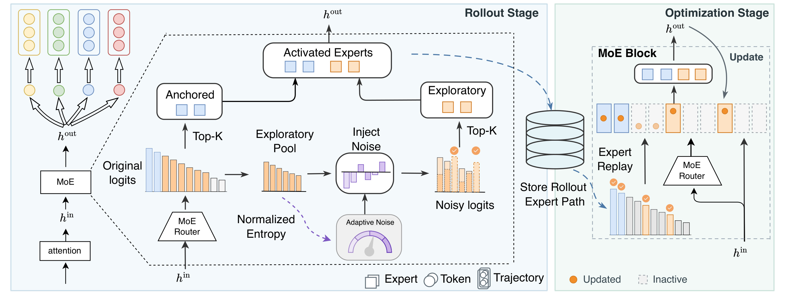
Figure 5应从左侧路由分数开始读。原始分数分成两个用途：一支不经过噪声，直接选择锚定专家；另一支先形成探索候选池，再通过噪声后的排名决定额外激活哪些专家。图中央的归一化熵负责调整噪声强度，因而不同词、不同层的扰动不必相同。蓝色专家维持当前上下文中较可信的计算成分，橙色专家为同一上下文提供新的计算组合，两类专家仍共同占用原来的固定激活名额。图左端不同颜色的词和轨迹表示这会改变输出分布，但颜色本身并不代表奖励高低，正确性仍要由后续任务奖励判断。
右侧训练阶段的虚线箭头说明，保存的不是模型参数快照，也不是完整专家输出张量，而是生成时选择的专家索引路径。更新时路由器会产生当前参数下的新logits，然而离散选择绕过重新Top-K，直接采用保存的集合；集合内权重依当前分数重新计算。这样被探索的专家才能在对应轨迹上得到梯度。如果把图理解成“训练时再次随机抽一次专家”，就破坏了作者要保持的一致性；如果把它理解成“专家权重也被冻结”，又会错误地切断当前路由器的学习。框架图没有展示端到端延迟、索引存储量和网络通信，因此不能从图的模块数量直接推导零额外开销。它给出的证据是数据流和优化对象一致，系统代价要另外测量。
符号解释：记词位置为$t$、MoE层为$\ell$、专家编号为$e$，总路由专家数为$E$，原始分数为$l_{t,\ell,e}$。为简化后续公式，局部省略$t,\ell$。作者先在全体路由专家上计算概率与归一化熵，再将低熵对应到更强噪声。归一化常数使用专家总数的对数，使不同专家数量下的熵具有相同区间；如果只在探索池里计算熵，就会忽略锚点占据的概率质量，得到与原文不同的扰动规则。其定义为：
这对应原文式（2）至（4）。$H$处于零到一之间，越小表示路由越尖锐。直觉上，尖锐分布较难改变候选专家排序，需要更大噪声才会尝试替代路径；本来就平坦的分布很容易被扰动，噪声反而要收敛。这里不是按回答不确定性调探索，也不是按奖励给噪声加权，而是利用路由器自己的局部置信程度。默认最小尺度为零、最大尺度为0.4，所以0.4是上界或参考尺度，不能理解成每个词都添加标准差0.4的固定噪声。
2.2 锚定专家和候选池采样
设总激活数$K=K_a+K_x$，$K_a$为锚点数，$K_x$为探索名额，$M_x$为候选池规模。先选原分数最高的锚点，再从非锚点专家里选择原分数最高的候选集合。两次排序都以未扰动分数为准，先确定可信路径和探索资格，随后才施加随机性。这样可以防止本来极低分的专家依靠偶然大噪声进入计算，也确保锚点身份不会因扰动重新变化。集合构造为：
原文式（5）至（9）明确排除了锚点再次进入候选池，因此并集保持恰好$K$个不同专家。默认Qwen配置保留八个激活名额中的四个，另外四个从十六个候选专家中选出。候选池十六不包含四个锚点；如果实现成全体前十六里再扣锚点，实际支持集就不同了。噪声只作用于候选分数，锚点无扰动；它也不会激活全部候选专家，只是改变剩余固定名额的归属。默认高斯噪声是局部对称扰动，不能直接把它解释成按softmax概率进行分类抽样；附录的Gumbel变体才有相应的采样解释。
最关键的数值细节是，加噪分数只用于离散选专家，混合权重始终来自未扰动分数。原文式（10）至（11）为：
$\mathcal E_{\ell,e}$是这一层第$e$个专家网络，$h^{\rm in}$和$h^{\rm out}$是层输入输出；权重只在选中集合内部归一化。它保留路由器对已选专家的相对信任程度，避免把路径随机性和混合系数随机性叠加。对于Top-1模型，只有一个路由名额，不能同时保留锚点又探索，所以$K_a=0$；此时候选池约束仍然成立。对于共享专家结构，共享专家始终激活并排除在扰动之外，ESRL仅作用于可路由名额。这些结构特例说明“所有模型都保留一半专家”不是算法定义，只是Qwen默认配置。
2.3 路由回放下的策略优化
对第$i$条轨迹，生成阶段保存每个词、每层的专家集合，以及当时输出词的对数概率。对应原文式（12）至（14），更新阶段固定集合、重算当前参数下的权重与隐藏状态：
$Z_i$是离散路由路径，$T_i$为轨迹长度，$L$为MoE层数，$\theta$是当前参数。回放减少生成策略与训练策略因重新选专家而产生的差异，并让原先探索到的专家参与学习。但它没有把路由噪声作为一个显式、可微分的策略动作重新设计奖励；本文仍通过语言输出概率训练选中的路径。存储和调度路由索引是实际系统工作，不能只在论文公式里设相等而不落实。
组内第$i$条轨迹的奖励为$R_i$，组大小为$G$。GRPO的标准化优势以及在回放路径下计算的重要性比为：
最后一式合并了原文式（15）与（16），$x$是输入题目，$y_t^i$是实际生成的词，$\epsilon$是防止除零常数，$\delta$为正文对称裁剪记号。附录实现使用下界0.20、上界0.28，属于非对称阈值，复现要以实际配置为准。生成期间同时存在专家噪声和词级温度采样；优化期间回放专家索引；最终评测则关闭路由扰动，使用普通模型路由。因此最终收益不是测试时临时增加随机专家获得的额外搜索，而是训练后参数所保留的能力变化。
3. 实验结果
3.1 数学推理跨架构结果
默认训练采用Slime，生成由SGLang承担、优化由Megatron-LM承担。每轮256道题，每题八条回答，共2048条轨迹；训练300轮，报告第299轮最终检查点。温度0.8、top-p为0.95、最大回答8192词元，Adam学习率为百万分之一，权重衰减0.1，不施加熵损失。数学训练使用MATH；评测四个数学集合分别为OlympiadBench英文纯文本开放题、AIME 2024、LiveMathBench提供的AMC子集和MinervaMath测试集。这些评测集合口径应与模型名一起记录，不能把所有奥数题或整个双语多模态OlympiadBench都算作本文覆盖。
评测对每题独立生成32条回答，Pass@1为正确率平均值，Pass@8由同一批回答的无偏估计计算。若其中正确回答有$c$个，则原文式（17）为：
它表示从这批样本抽取$k$条时至少一条正确的估计概率，不意味着用户能自动识别正确答案。代码场景可以执行测试辅助筛选，科学选择题的实际部署是否有验证器，则是另一个问题。
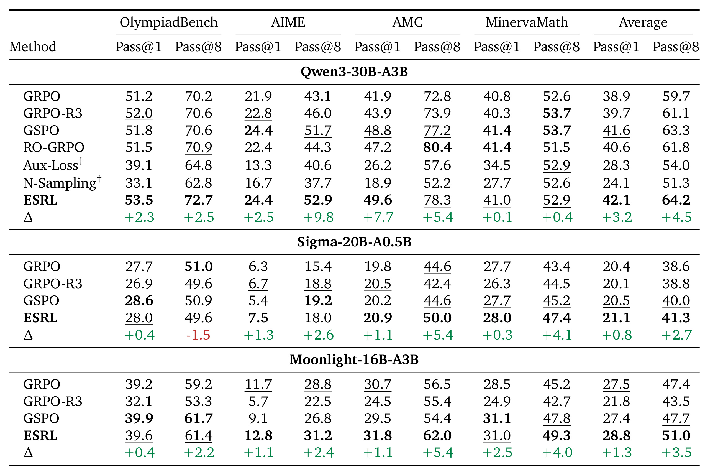
Table 1的列把四个任务的单次成功和八次覆盖分开，最后两列是任务平均。Qwen的ESRL得到42.1/64.2，对比GRPO的38.9/59.7，按展示值分别增加3.2和4.5个百分点；对比已加入回放的GRPO-R3，其优势为2.4和3.1个百分点。这后一组更能隔离专家探索的新增贡献，不能把完整收益都归因于噪声。强基线GSPO已经达到41.6/63.3，ESRL平均优势缩小为0.5/0.9个百分点，提示后续多种子复现应重点验证这一幅度，而不是只重复最弱基线。
逐任务阅读会发现边界。Qwen的AMC Pass@8为78.3，低于RO-GRPO的80.4；MinervaMath的41.0/52.9低于GSPO的41.4/53.7。Sigma的平均21.1/41.3优于GRPO的20.4/38.6，但OlympiadBench Pass@8从51.0下降到49.6，原表Delta行标为负1.5，展示数字直接相减为负1.4，这是保留小数精度不同的差异，不能掩盖负结果。Moonlight平均28.8/51.0也胜过GRPO的27.5/47.4，但OlympiadBench两项和Minerva单次结果仍未全面超过GSPO。由此能支持的是三个架构的平均表现更好，而不是所有数据集、所有指标都最好。
表中的Aux-Loss和N-Sampling带匕首，作者解释为训练坍塌时选择最佳检查点，而非同样的最终检查点。它们在这一套配置下明显较差，但不能推导出所有辅助负载损失或专家采样方案普遍无效。Top-1 Sigma不能使用锚点，仍取得平均收益，则说明候选池、熵适配和回放可以在更稀疏结构上工作；同时它的负结果也说明机制迁移不等于保持各任务收益排序。表格没有给多随机种子的置信区间，较小差距需要谨慎解释。
从实验设计看，三种骨干不仅激活比例不同，模型起点和训练稳定性也不同，所以不能把三组平均分当作同一能力量尺直接比较。更合理的读法是每一组先固定骨干，比较相同奖励与采样协议下的方法增量，再检查这种增量是否在另一个路由结构上仍存在。尤其共享专家一直参与计算，它提供的稳定成分和显式锚点不完全相同，表格支持架构兼容，却没有把这两种稳定来源独立拆开。
3.2 科学、代码与强指令起点
作者另在Qwen上使用Nemotron-RL-knowledge-mcqa与代码训练数据扩展到科学推理、知识选择和代码生成。下面的表格用于检验这是否只是数学训练的特例。
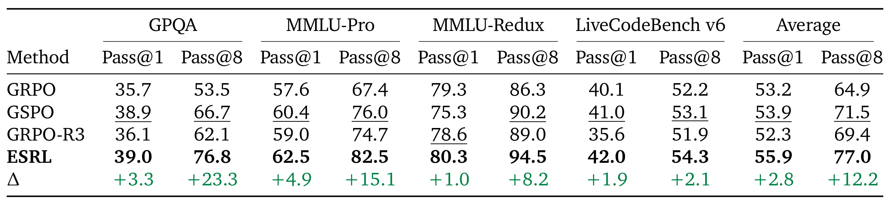
Table 2中，ESRL在GPQA、MMLU-Pro、MMLU-Redux、LiveCodeBench v6的展示列都领先比较方法。GPQA的Pass@1从35.7到39.0，而Pass@8从53.5到76.8；MMLU-Pro为57.6/67.4到62.5/82.5；MMLU-Redux为79.3/86.3到80.3/94.5；代码为40.1/52.2到42.0/54.3。科学选择题的多次覆盖提升明显大于单次准确率变化，支持“更容易在多条回答里找到正确解”的解释，但不足以证明部署中的一次回答正确率也有同等幅度提升。尤其选择题多次猜中与可靠推理存在差别，评估成功覆盖时需要同时看答案分布和验证方法。
平均列展示53.2到55.9、64.9到77.0，直接相减为2.7和12.1个百分点，表中Delta行写2.8和12.2。本文按显示数字报告前者，并注明原文增量行的精度差异；不把二者混成两次独立实验，也不重新推断未公开的小数。LiveCodeBench采用累计release_v6、每个提交六秒执行超时，且所有最终评测关闭路由噪声。与数学任务不同，科学和代码采用各自领域训练，不应描述为只在数学上训练便零样本跨领域泛化。论文给的是方法能够在其他任务训练设置下有效的证据，训练数据与验证器也是效果的一部分。
附录把评测判分进一步具体化：科学题要求最后一行给出选项字母，使用对应格式抽取；知识修订集只保留标注无错误的问题，因而不包含那些有歧义或标注缺陷的题。代码则从回答中的代码块抽取程序并执行测试，不是由语言模型主观评分。成功与失败因此会受到格式遵守、答案抽取和运行时限制共同影响。复现若更换抽取规则或把超时放宽，指标口径就改变，不能只对比模型名称和平均数。对代码训练集，正文引用了来源，但本轮没有独立核验完整数据去重与污染检查，也不应凭基准名称就排除训练测试交叉。
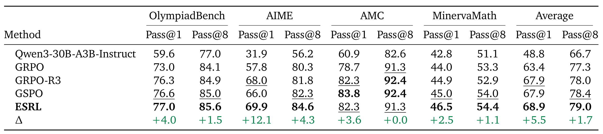
Table 3把原始Instruct模型、GRPO、GRPO-R3、GSPO与ESRL放在一起。起点平均为48.8/66.7，经过GRPO到63.4/77.3，ESRL最终为68.9/79.0；作者强调相对GRPO提高5.5/1.7个百分点，不能把相对原始模型的全部二十余点单次收益归到专家探索。更强的回放和GSPO基线都已有67.9的单次平均，所以ESRL对它们的新增改善为一点，证明已有较好指令能力时仍有空间，但空间的大小依赖对照对象。AIME单次从GRPO的57.8提高到69.9，是平均收益的重要来源；Minerva从44.0到46.5也有贡献。
该表仍不是逐项全胜。AMC单次ESRL为82.3，低于GSPO的83.8；Pass@8为91.3，与GRPO相同，低于GSPO和GRPO-R3的92.4。因此“强模型也有效”宜限定为四任务平均及多数指标，而不是后训练一定能同时提升所有子能力。相对较弱起点，强模型的多次覆盖本来已经更高，Pass@8剩余空间也更小，单次和多次提升幅度不能机械横向比较。表内给出同一评测协议是有价值的控制，但缺少任务样本量加权的另一种聚合和多种子误差，后续判断能否进入生产实验前需要补齐这些统计信息。
这组对照还有一个容易误读的地方：未经本次训练的指令模型已经经历上游指令微调，其具体优化历史不是这张表控制的变量。它用于说明较强起点仍有探索空间，不用于证明本文方法替代了指令微调。不同任务对强起点的饱和程度也不同，平均数会把这些难度差异压缩成一个值。更有诊断价值的是继续追踪那些单次提升明显而多次几乎不动的题目，检查正确答案是否已经处于已有支持集中，只是概率分配被重新调整；对于多次也提升的题目，再检查是否出现了以前难以生成的正确轨迹。本文表格无法单独完成这种题级归因。
3.3 控制探索强度的消融
探索越强不代表训练越好。作者把噪声幅度、是否保留锚点、是否熵自适应以及候选池大小分别展开，下面先看最直接的噪声崩溃反例。
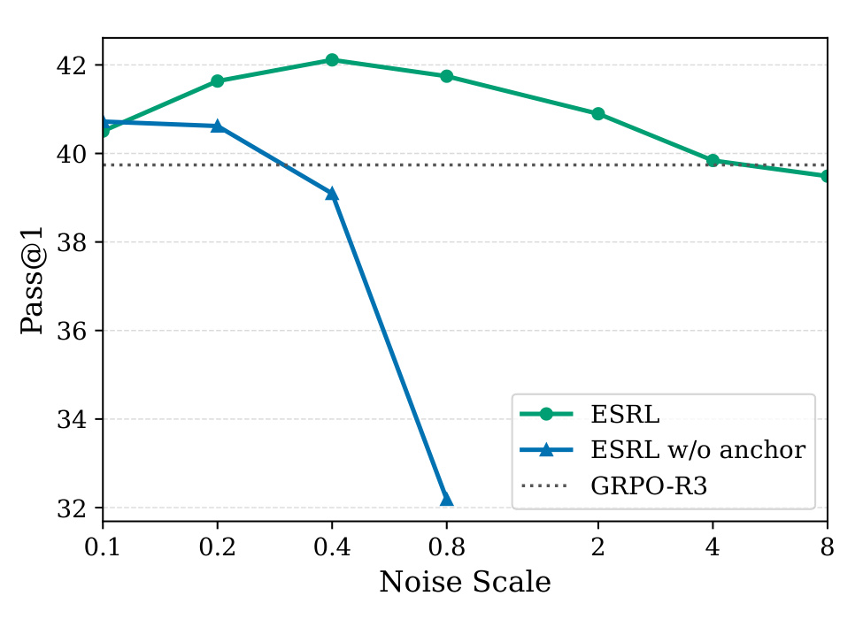
Figure 8横轴是噪声尺度，纵轴是最终平均Pass@1，绿线有锚点、蓝线无锚点，虚线是GRPO-R3。绿色在0.4附近达到约42.1，此后噪声继续增大，性能逐渐回落；到极大噪声时不能继续宣称优于基线。蓝线从0.4附近已经明显恶化，到0.8接近32，说明无约束改变专家组合很容易损害模型已有能力。这个曲线不是某一回答的即时奖励，而是整轮训练后的结果，因此支持锚点对于控制训练期间错误探索累积的重要性。比较还表明锚点并不让噪声“越大越安全”，只是拓宽可用区间。默认0.4的选择有经验支持，却仍是特定模型、任务和候选池条件下的最优点；换架构需要重新检查专家改变率和最终质量，不能按总参数量简单等比例放大噪声。
横轴使用离散噪声设置，不能按图上视觉距离推断线性响应规律。对大噪声端的读数只作近似趋势判断，精确指标以对应数值表和正文报告为准；尤其不能把绿色在中等噪声下的稳定表现外推到未测试的噪声范围。
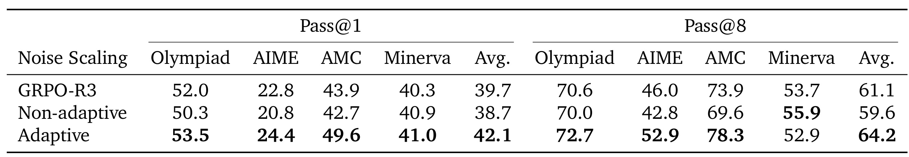
Table 4刻意保持高斯分布和锚定采样，并让两种设定的专家改变率相匹配。这使它比“一个噪声大、另一个噪声小”的对比更有解释力：固定强度得到38.7/59.6，低于GRPO-R3的39.7/61.1；自适应恢复到42.1/64.2。即使总体换专家频率类似，把变化分配到不同词和层，结果仍然不同。ESRL的价值因此包含扰动预算如何分配，而不仅是平均注入了多少随机性。低熵路由分布需要更大扰动才会跨过专家排名差距，高熵分布则只需小扰动就能改变选择，这与方法的反熵映射相吻合。
细看任务分解，自适应AIME Pass@8为52.9，相对固定42.8提高10.1个百分点；AMC为78.3对69.6，提高8.7。但Minerva Pass@8却从固定55.9下降到52.9，说明平均最优的局部规则不保证每种题型都受益。这一反例也提醒我们，路由熵只是计算分布的置信代理，不等同于问题难度、语义模糊度或答案不确定性。表中未比较所有可能的映射函数，如分层归一化或分位数策略，所以它证明当前线性自适应优于当前固定设置，并没有证明线性反熵形式是唯一合理设计。复现可以先保持专家变化总量相同，再考察位置分配，避免把调参量不同误认为机制胜负。
另一个复现要点是专家改变率的统计范围。若只记录第一层或首个词，不能代表所有词层对的实际扰动量；而自适应恰好会重新分配这些位置上的强度。建议保留分层分位数和候选集合重叠的统计，再将它们与任务正确率对应，避免一个总体均值掩盖局部过度扰动。本文给出的匹配实验支持分配机制重要，但未报告每种题型的熵分布，所以不能据此推断数学难题一定应该拥有更大或更小的噪声。
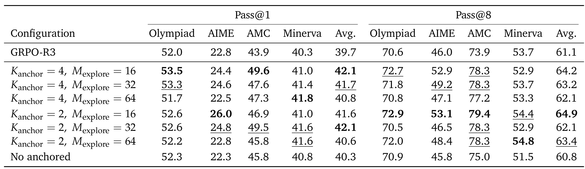
Table 5中总激活预算仍为八。四锚点、十六候选得到42.1/64.2；四锚点扩大到三十二候选为41.7/63.2，六十四候选为40.8/62.1。候选池更大确实提供更广支持集，却会把匹配较差的专家纳入竞争，因此并不自动提高学习质量。两锚点、十六候选的Pass@1为41.6，稍逊默认，Pass@8却达到64.9，是本表最高；这符合保留更多既有路径有助于单次稳定性、开放更多探索名额有利于多解覆盖的权衡。两锚点三十二候选也有42.1单次平均，说明默认配置并非唯一达到该精度的选择。
无锚点配置40.3/60.8，相对回放基线单次略高而多次略低，更直接地否定“有随机探索就一定更好”。阅读这些结果还需把两个超参数的角色区分开：锚点数改变本次计算中有多少部分保持可靠，候选池大小改变其余名额可以去哪里。原文Figure 9的诊断显示，候选池主要扩展可达到的多样性范围，而锚点数量会改变正确率与Self-BLEU曲线的形状，两者不是相同旋钮。真正部署时如果更重视一次输出，不能只用最高Pass@8选参数；如果有验证器和多次搜索预算，也不应只追单次平均。表中的最优值来自有限网格，尚不提供自动为新任务选参数的方法。
候选池的名额也不等于推理时额外计算的专家数：先在候选中比较分数，再只执行所选的探索专家。候选更多主要增加排名和选择的范围，不是让六十四个候选全部做前馈计算。不过总激活数恒定也没有消除负载位置变化，选到不同设备上的专家仍可能改变通信行为。对于专家跨卡切分的实际实现，既要检查平均精度，也要记录每个专家分片的热点程度，才能判断某组配置是否真正可用。
3.4 层位置与训练阶段
不同层的路由变化对输出影响不同。原文诊断中靠后的层扰动更容易产生较大输出位移，但“影响强”仍不等于“训练最优”，要看完整训练对照。
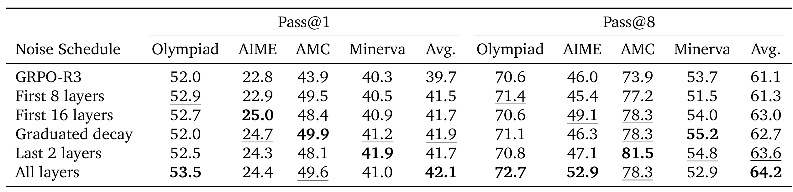
Table 6比较前八层、前十六层、逐步衰减、最后两层和所有层。全层平均42.1/64.2最好；最后两层为41.7/63.6，已经较为接近。它提示探索未必需要所有层才能有收益，尤其考虑工程实施和排查复杂度时，可以先选局部层验证机制。但这不代表论文证明局部扰动有确定的速度优势，表中只有任务指标，没有相应的时间测量。前八层的Pass@8只有61.3，接近基线61.1；扩展到前十六层为63.0，说明早层的小范围探索未必足够覆盖有用路径。
任务列给出更细的选择冲突：最后两层AMC Pass@8为81.5，超过全层78.3；渐变调度的AMC Pass@1为49.9和Minerva Pass@8为55.2，也高于全层49.6和52.9。全层胜在四任务平均，局部方案可能偏向特定任务。对这类多参数方法，只报告最佳平均会隐藏能力分布的移动，因此复现应保留逐任务结果。原文Figure 9显示后层比对应早层对输出分布影响更大，这提供一种解释线索，但不能据此把每个性能差距都归于后层专家的语义专门化；论文未给这种因果归因。合理结论是扰动位置是独立于噪声大小的重要选择，且存在可测的任务依赖。
表内的层策略还影响需要存储和检查的扰动路径范围。即使只对最后两层加噪，其他层在不同词序列下也可能采用不同的正常路由，所以优化系统仍须正确处理完整轨迹，而不能想当然地只保存两层就完全消除生成训练错配。本文回放定义针对每个词每个MoE层，局部噪声并不改变这个一致性原则。将层位置消融作为系统简化手段之前，应该先明确正常路由是否已有回放机制，避免把两种改动合在一次实验里。
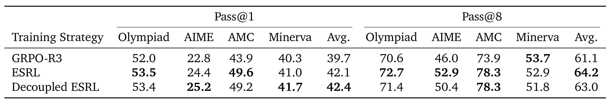
Table 7的联合模式在整个训练中同时使用专家噪声和词级温度采样；解耦模式第一阶段温度为零，仅靠路由噪声产生差异，随后关闭路由噪声、开启0.8温度继续训练。解耦得到42.4/63.0，联合为42.1/64.2：前者单次平均略高，后者八次覆盖更高。第一阶段能在贪心解码下继续产生有效学习，说明专家路径确实是一个独立的随机来源，而不是只通过输出采样间接起作用。但是表中没有说永远关闭词级采样就是最佳训练流程，最终解耦仍切换到了词级采样。
逐任务上，解耦AIME为25.2/50.4，联合为24.4/52.9，同一任务上单次和多次方向都能分离；Minerva解耦为41.7/51.8，联合41.0/52.9也类似。这反映出轨迹质量、答案分布集中程度和成功解覆盖并非单个指标可替代。方法比较还要固定总更新量、阶段边界及检查点选择，不能把两阶段额外训练收益归到探索顺序。附录说明从第一阶段选定检查点继续，读者复现时应记录选择准则和总训练预算；单靠这张表无法判断不同阶段长度的普遍最优比例。论文提供的是可分离性的有力实验以及一组可行流程，尚不是通用课程学习配方。
阶段切换还改变了探索来源的分布：前一阶段的数据由不同专家路径产生，后一阶段的数据由固定路由下的词级随机性产生，两者可能覆盖不同的失败类型。这里应区分“能够单独训练”和“单独训练始终最优”。前者由贪心解码仍可产生多条差异轨迹支持，后者需要与等预算全程专家探索作更系统的对照。本文给出的两阶段设计能帮助定位机制，尚不能断言先专家后词级优于所有其他阶段排序。
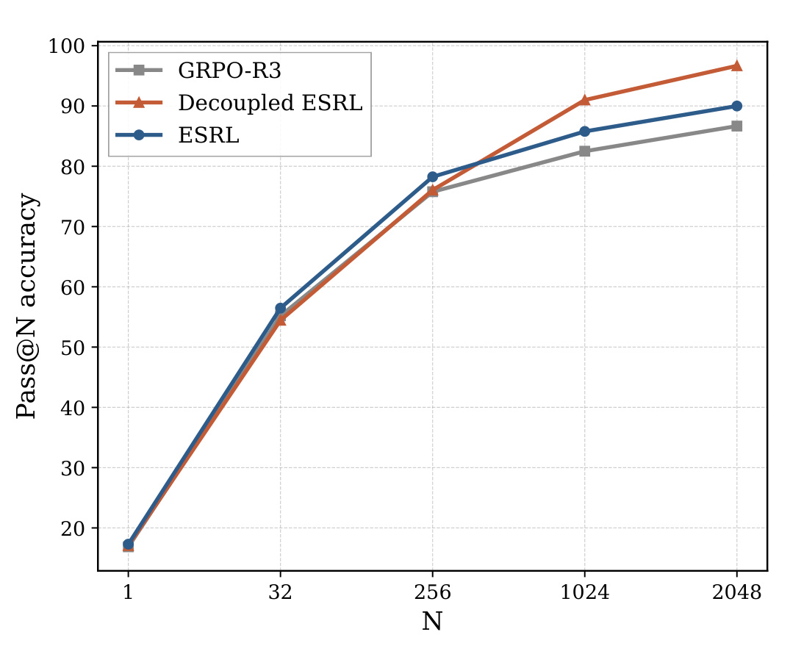
Figure 11基于第一阶段第49步检查点，每题采样2048条后计算不同$N$的成功覆盖。横轴从一次到2048次，不能与默认评测的32条样本混为同一预算。少量样本下联合探索略好；随着预算增加，解耦的曲线超过联合与GRPO-R3，说明专家独立探索早期可能保留更广的成功解支持集。这里的高预算接近满分仍依赖“至少一次成功”口径，实际系统若没有可靠验证器，不能自动兑现这种潜在覆盖。图中采样点之间用线连接仅辅助趋势阅读，不能认为所有中间预算都有独立测量。它对研究的价值是揭示训练方式会改变整条预算—成功率关系，而不是只改变单点得分；对部署的约束是2048次生成的成本必须计入，不能与“相同rollout数下的训练改进”混用。
大预算曲线更适合检验可达解的范围，而小预算更贴近有限延迟的用户体验。两种排序发生交叉恰好提醒我们，评价探索方法前应先规定可承受的采样次数与正确性验证条件，否则可以用不同预算支持相互矛盾的优胜结论。
3.5 附录权重与系统边界
原文附录还补充了噪声分布和混合权重。Gumbel尺度0.3与高斯参考尺度0.4按专家改变率近似匹配，前者平均40.8/62.4，后者42.1/64.2，都高于GRPO-R3的39.7/61.1。该结果说明机制不完全依赖高斯分布，但默认高斯在这一组设定上更好。Gumbel在只选一个探索专家时对应温度化分类采样，多选则对应无放回排序抽样；高斯没有同样的softmax等价，因此实现和理论解释不能互换。
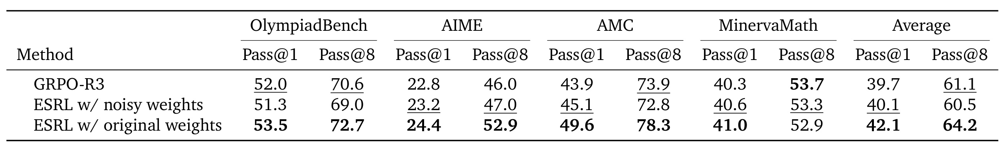
Table 9比较最容易实现错误的一步。若把扰动后的logits也用于专家权重，平均结果为40.1/60.5；仅用扰动选索引、使用原分数混合，则为42.1/64.2。前者相对GRPO-R3的39.7/61.1，单次只略高，多次反而下降。这意味着“选中了同一组专家”仍不能保证实现等价，集合内部的混合系数改变也足以影响训练质量。Qwen的OlympiadBench在噪声权重下为51.3/69.0，低于回放基线52.0/70.6；默认原权重提高到53.5/72.7，变化不只是平均值被个别数据集推动。
附录Figure 12进一步显示，噪声权重使PPO裁剪触发更频繁。作者把它理解为策略偏移与重要性比率方差被放大，这与只扰动离散路径、保留原相对置信的设计一致。这个机制解释有诊断支持，但clip fraction曲线本身不能分离所有数值因素，复现还需检查rollout log-prob、当前回放log-prob、权重归一化及精度设置。更不能把这一结论简化成“噪声不能用于可微权重”，它是在本文训练链路、同样回放策略下比较两种混合方案。保留表格的负结果有助于排查工程差异：如果单次略升、多次覆盖却下降，首先应核对是否错误地用了加噪分数参与聚合，而不是立刻继续扩大候选池。
关于效率，原文Figure 7的实验固定每批64道题，改变每题32、64、128、256条回答，不能和默认每批256道题、每题八条混用。ESRL的64条超过GRPO-R3的128条，128条超过其256条，支持特定设置下更好的样本效率。有效组定义为二元奖励组内既有正确也有错误，组数等于总组数减全错组和全对组；ESRL训练中保持更多这类组，连接了探索与优势信号。Self-BLEU则由每题16条回答、60道题、四阶无平滑BLEU计算，保留截断和无效响应，所以更低分不一定全来自有意义的新解法。
原文Figure 10的负载统计以离散专家选择次数计算，不按门控权重加权。CV是专家负载标准差除均值，最大负载因子是最大负载除均值；两组训练时不均衡都增加，ESRL只是相对较低。摘要称没有额外采样或计算成本，较稳妥的解释是默认比较不增加生成条数、不增加每词激活专家数量。论文没有提供全面的端到端延迟、通信流量、路由日志峰值内存和训练吞吐表，不能将其提升为所有系统开销严格为零。保存每词每层索引、计算全专家熵、扰动候选并回放都有实际实现成本；均衡改善是否抵消这些成本，需要测量，本文证据尚未覆盖。
4. 总结
ESRL最明确的贡献是把MoE架构里的专家选择从默认不变的生成条件，提升为受控制的探索空间。锚点约束保证部分高置信计算持续存在，候选池限制替代专家的范围，路由熵控制扰动位置与幅度，回放保证探索到的计算路径真正参加训练。四者连接之后，方法能够沿用原来的奖励与GRPO目标；它改变的是训练数据如何由稀疏计算路径生成，以及这些路径如何在更新时保持一致。数学、科学和代码实验提供了跨任务和跨稀疏结构证据，但更准确的收益描述是平均性能改善且存在逐任务例外。
对大模型工程，优先迁移的是路径记录和训练一致性的检查方法。许多系统在生成端与训练端使用不同框架，若只把专家噪声加进生成服务而忘记索引回放，很容易得到看似正常、实际更新了另一组专家的训练。另一方面，回放并不冻结专家权重，必须在保存集合上计算当前分数；噪声分数也不能直接充当混合权重。由此看来，ESRL复现失败的排查顺序应先查路径、权重和概率的一致性，再查噪声参数，而不是先把问题归到学习率或模型规模。
对推荐系统，最直接的研究切入是使用稀疏专家骨干的生成式推荐或重排后训练。可以在固定激活预算内尝试替代计算路径，并保留主路径降低质量波动；但本文的奖励来自可验证推理或代码，推荐中的点击、停留、转化具有曝光偏差和更高噪声。专家探索多样性也不等于候选商品多样性，更不等于用户长期效用。若用于推荐，应把候选覆盖、单用户相关性、流量群体分布和延迟同时作为验证目标，并严格区分模型内部探索与向用户真实曝光探索。这些是迁移假设，不是本文已做的线上结论。
局限主要有四方面。第一，核心结果缺少完整多种子置信区间，和GSPO的较小差距仍需统计复核；第二，原文部分展示数值与Delta行的舍入差表明复现应保留未舍入结果，尤其不能消除负结果；第三，噪声、锚点、候选池与层位置都有任务依赖，论文尚未提供稳定的自动选择方法；第四，端到端成本与长期训练行为没有被完整测量，不能把激活专家数相同当作吞吐、显存和通信都相同。另一个重要边界是高Pass@N依赖多次采样与答案判别，不能直接等同于无需验证器的可靠推理。
后续可先在Qwen的同一套训练配置下复现GRPO、GRPO-R3、ESRL与GSPO，多种子记录逐任务Pass@1和Pass@8，确认专家探索相对回放的净增益。第二步应对保存路径和训练路径逐词逐层做一致性比对，并把原始权重与噪声权重对照作为实现回归检查。第三步再在固定总生成词元和墙钟预算下比较不同锚点、候选池以及局部层噪声，记录有效组比例、实际吞吐和日志占用。若准备迁移到推荐任务，还应增加离线反事实或受控线上验证，优先检查少数用户群和低频内容是否因路由扰动受损。这样能够把本文可验证的机制价值转化成可检验的工程实验，而不会把平均基准改进提前当成普适收益。
复现结果还应记录软件版本、模型权重版本与随机种子，使路由层的数值变化能够追溯。若只保存最终平均分而没有配置和逐任务输出，后续很难区分实现修正、评测口径变化与真正的算法改善。